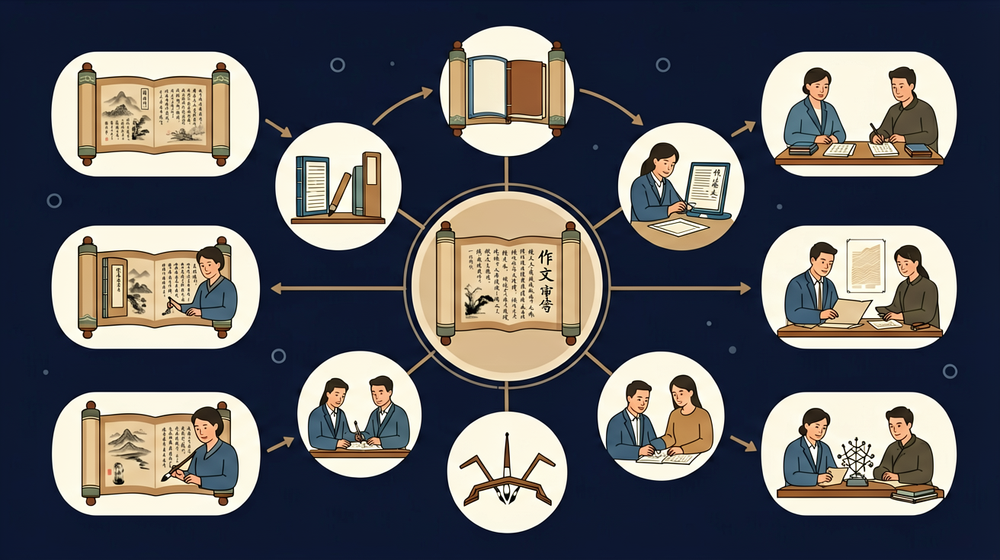
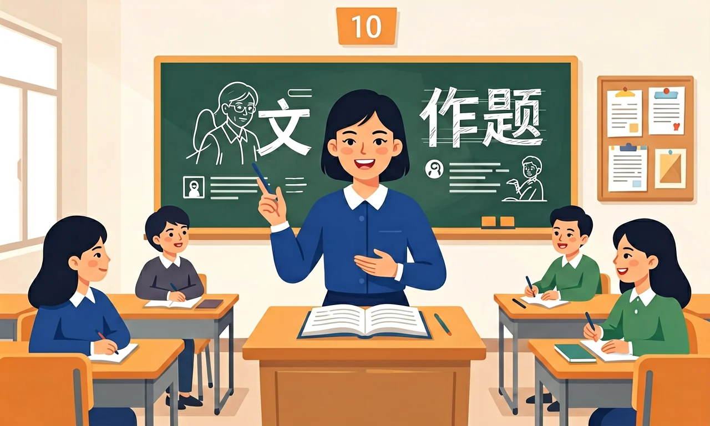

能凭借语感和对语言运用规律的把握，根据具体的语言情境和不同的对象，运用口头和书面语言文明得体地进行表达与交流。

❓ 为什么我总感觉作文题目看不懂？
❓ 立意怎么才能不跑题？
❓ 结构安排有没有万能模板？
学完这一课，这些问题你都能自信地回答。
🎯 能说出作文审题的三个关键步骤
🎯 能判断给定立意是否符合题目要求
🎯 能分析优秀范文的结构特点
审题时首先要关注什么？
以下哪种立意最符合'路'的题目要求？
作文审题立意与结构是高中语文的重要内容。能凭借语感和对语言运用规律的把握，根据具体的语言情境和不同的对象，运用口头和书面语言文明得体地进行表达与交流。
讲究语言文字表达的效果及美感，具有创新意识。

审题要抓住任务指令、材料关键词与关系类型（因果、辩证、比较等）。立意求准、求深、求新（在准的前提下）。结构服务立意，段落功能清晰，开头结尾有力。
关于'科技改变阅读'的审题，正确的是：
设计对照实验验证两种阅读方式的记忆留存率差异
1. 审题时忽视限制条件：学生常因急于下笔而忽略材料中的"结合当代青年责任"等限定语。2023年某省模考中，32%的作文因脱离"数字经济时代"背景要求被判偏题。根源在于对"情境化写作"认知不足，正确做法应像解数学题般圈画题干关键词，例如《说"安"》需区分"安定"与"安逸"的辩证关系。
2. 结构模板化严重：58%的考场作文呈现"开头+三个事例+结尾"的机械结构，如强行用司马迁、爱迪生套入"挫折"主题。这是对"结构服务立意"原则的误解，优秀范文如《文明的韧性》会采用"历史现象-文化基因-当代启示"的递进式结构，段落长短随论述需要自然变化。
3. 论点与论据割裂：某校批改显示41%的作文存在"观点+例子"简单罗列，如提出"创新需要勇气"后直接堆砌华为案例。深层原因是未掌握"PEEL（Point-Evidence-Explanation-Link）"论证法则，应像《"低美感"现象之忧》那样，用数据分析论证"快餐文化导致审美能力退化"的具体机制。
复制提示词到 AI 学伴，生成「作文审题立意与结构」的思维导图或赏析提纲；也可以上传你手绘的示意图，请 AI 学伴点评。
复制后可粘贴到 AI 学伴继续对话。
1. 商业计划书撰写：美团在2022年乡村振兴方案中，严格遵循"痛点分析-解决方案-预期效益"结构，对应作文中的"是什么-为什么-怎么办"框架。其"县域即时配送"章节用数据论证市场缺口，恰似议论文中的量化论据。
2. 法律文书制作：北京某律所诉讼文书采用"诉讼请求-事实理由-法律依据"三部分，与"引论-本论-结论"的论证结构异曲同工。其中"侵权事实"部分按时间线铺陈细节，类似记叙文中的场面描写技巧。
3. 科研论文摘要：中科院《5G技术白皮书》的摘要包含"研究背景-方法创新-应用价值"要素，暗合"起承转合"结构原则。其将关键技术参数转化为通俗说明，体现了作文教学中的"读者意识"训练。
问题1：当材料出现"有人说A，有人说B"的争议性观点时，为什么不能简单选择支持其中一方？分析提示：比较2021年新高考Ⅰ卷"体育之效"与2023年全国甲卷"技术与人"的命题差异，注意材料中是否包含"然而""但是"等转折词，思考命题人期待的思维层级是"二选一"还是"辩证统一"。
问题2：为什么有些高分作文会故意违反"开头点题"的常规？分析线索：研究《中国青年报》冰点专栏的获奖特稿，注意其"场景描写导入"与"主旨延迟揭示"的手法，结合心理学中的"峰终定律"，思考情绪铺垫与理性论述的配比关系。
先要破除"审题=找关键词"的误区，2019年浙江卷"作家与读者"题需捕捉"倾听"与"坚持"的张力关系。接着在立意阶段，参考《普通高中语文课程标准》要求的"语言情境"把握，如处理"传统文化热"题材时，需区分"博物馆打卡"的表象与"文化认同"的深层逻辑。结构搭建绝非简单分段，某篇讨论"内卷"的55分作文，先用调查数据呈现教育焦虑，接着分析剧场效应形成机制，最后提出"评价体系多元化"方案，体现"现象-本质-对策"的思维链条。而段落内部的论证，可借鉴Toulmin模型，比如论证"躺平不等于消极"时，先明确主张（Claim），列举白领辞职务农的实例（Data），再补充"这是对异化劳动的反抗"的推定（Warrant）。最后修改环节要警惕上海市教研院指出的高频问题——34%的作文败在结尾空喊口号，应像处理数学证明题那样检验论点与论据的闭合性。
把材料句分层，明确写作对象与态度；列出 3 个分论点或情节节点再开写。
常见误区：常见误区是抓住一点不顾整体，造成偏题。
审题最重要的是？
先独立作答，再点选项查看对错与错因。
下列哪组小标题最符合'科技对阅读的双刃剑效应'的论证逻辑？
若以'回归经典阅读的价值'为论点，下列哪段材料最适合作分论点？
下列开头段最符合'提出问题-表明观点'要求的是：
议论文常见的三种论证结构是：总分总、____、递进式。
答案：并列式
并列式是基本论证结构之一
审题时要特别注意题干中的____词和限定词。
答案：核心
核心词决定论述方向
本页内容请结合本课知识与课堂活动展开。
（高考题）'说纽带'一题中，最佳立意是：
（迁移题）将'阶梯式结构'应用于'成长'主题时，应该：
审题时发现题目有多个关键词，应该：
✅ 挖掘题目隐含的价值观导向
💡 缺乏深度思考习惯
✅ 根据内容需要灵活安排段落
💡 过度依赖模板
口诀：审题要三看：看关键词、看限定语、看提示语
类比：审题就像导航，关键词是目的地，限定语是路线要求
复述本课两个核心概念的定义。
用本课方法分析一个新例子。
有同学认为：只看题目表面意思 —— 请说明错在哪里。
有同学认为：结构千篇一律用三段式 —— 请说明错在哪里。
把还没弄明白的地方写下来问 AI 学伴。它会先帮你找到卡住的地方，再给你一个小小的提示，让你自己往前走一步。